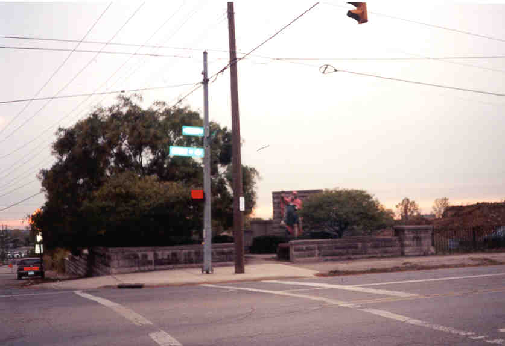
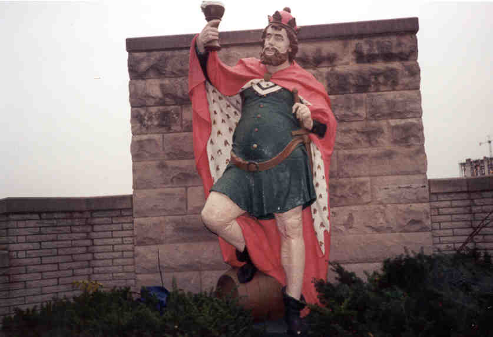
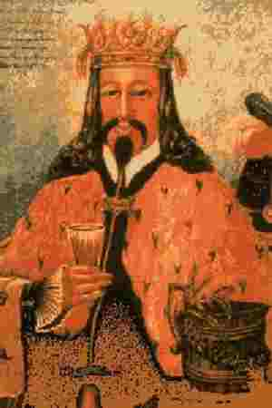
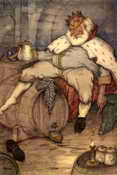
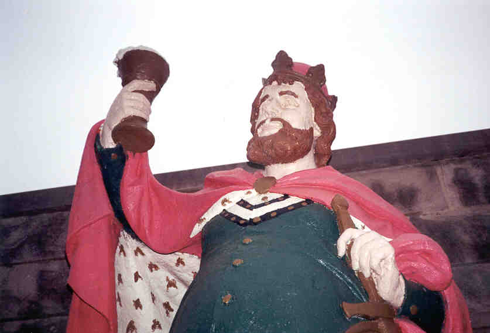
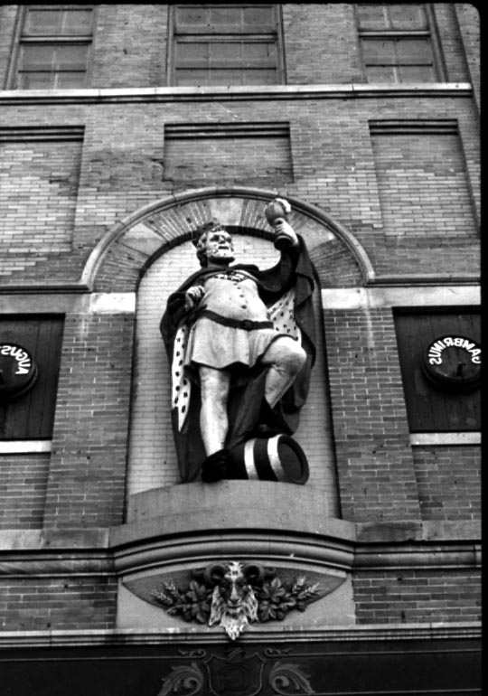

For over twenty years, King Gambrinus reigned over the corner of Front and Sycamore Street in downtown Columbus. I spotted him one day while sneaking away from a high school field trip, ruling his desolate little pocket park at the edge of a vacant lot.

The Park
The statue is of a fat guy in a robe with a crown on his head, holding up a glass of something. His right foot is on a barrel, and he looks happy.

Who is the guy? He is King Gambrinus, guarding the entrace to the Brewery District at the location of the old Gambrinus Brewing Company, which operated from 1906 to 1919. Gambrinus is the mythological king of beer. To read the entire legend click here. The gist of it is that he invented beer to help him win the hand of his boss's beautiful daughter when he was apprenticed to a glassmaker. You may have heard that beer has that effect on girls. Gambrinus went on to become King of Flanders.


King Gambrinus

As it turns out, King Gambrinus used to stand on a pedestal high up the wall of the August Wagner Brewery. When August Wagner went under, it looked like Gambrinus was headed for the junkyard--or some college kid's dorm room. But the Columbus Dispatch purchased him on June 11, 1975, had him restored, and placed him in the park at Front and Sycamore.

The King stood in this park for twenty-five years, until they decided to restore the Brewery District. In 2000 he disappeared. I was concerned for his well-being, until I learned that he had been restored, in all his glory, to a spot in front of a new park in the Brewery District. Not as cool as his secret park, but at least he's still around.
Back
forgottenohio@yahoo.com